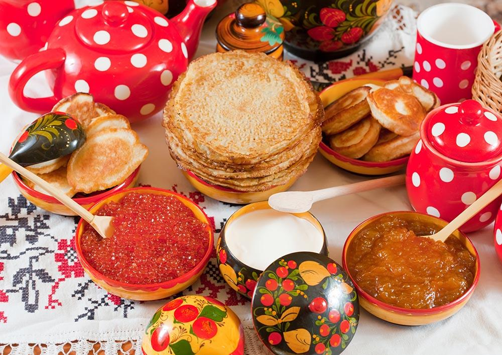

Национальные блюда разных народов мира |
Национальные блюда Украины:сало, борщ, вареники или пироги,
кляцки, сырники.
|
Национальные блюда России:щи, оливье, пельмени, блины, пастила.
|
Национальные блюда Белоруссии:драники, колдуны, мочанка, верещака, жур, кулага.
|
|
 |
|
Национальные блюда Польши:журек, польские «пироги», бигос, мазурка.
|
Национальные блюда Венгрии:традиционный гуляш, куриный паприкаш,
турош чуса, фазелек, ретеш.
|
Национальные блюда Молдовы:мамалыга, плацина, гивеч, овечья брынза, баба нягрэ.
|
|
|
Дополнительная информация про
национальные блюда Молдовы
|
Национальные блюда Литвы:бигус с мясом, кугелис, кибины, кабан
тушеный с красным перцем, шакотис.
|
Национальные блюда Болгарии:баница, таратор, гювеч, сарми, гараш.
|
Национальные блюда Латвии:путра, скландраусис, бифштекс клопс, тминный сыр,
буберт.
|
|
|
|
Национальные блюда Дании:смёрребрёд, колдскол, миллионбёф,
бле-флэск, cтегте-силд, эллебрёд,
рёдгрёд мед флёде, датские булочки.
|
Национальные блюда Австрии:венские колбаски, «Блинный» суп, шлипфкрапфен,
венский картофельный салат, тафельшпиц,
торт «Захер».
|
Национальные блюда Германии:вайсвурст, маульташен, рулька по-берлински,
лаубскаус, кенигсбергские клопсы, щницель,
кекс Штоллен.
|
|
|
Дополнительная информация про
национальные блюда Германии
|
Национальные блюда Чехии:кулайда, вепро-кнедло-зело, свичкова на сметане,
говяжий гуляш с кнедликами, мучной кнедлик,
трдельник.
|
Национальные блюда Греции:стифадо, мусака, клефтико, папутсакья, паститсио,
гемиста, питес, долма, дакос, хорта, лукумадес,
пахлава, хтаподи схарас.
|
Национальные блюда Италии:минестроне, карпаччо, тортеллини, ньокки, ризотто,
пицца, лазанья, триппа, джелато, тирамису.
|
|
|
|
Национальные блюда Франции:фондю, рататуй, лягушачьи лапки, эскарго, фуа-гра,
крепы, круассан, потофе, кассуле, буйабес,
крем-брюле, киш лорен, вишисуаз.
|
Национальные блюда Испании: паэлья, гаспачо, тортилья эспаньола, тапас, хамон,
андалусия, наварра, мадридское рагу, торт«Сантьяго»,
мадридский суп.
|
Национальные блюда Грузии:хинкали, хачапури, пхали, сациви, чахохбили,
харчо, аджапсандали, хаши, пеламуши, чурчхела,
баклава.
|
|
|
Дополнительная информация про
национальные блюда Грузии
|
Национальные блюда Турции:шифа чорбасы, кебаб, кокореч, долма, симит,
суджук, бёрек, пияз, хумуз, лукум, локма,
айран, ракы.
|
Национальные блюда Египта:фуль, Фалафель, Кускусейя, Дагаг Мехамар,
Фаттет Ляхма Би ль Халь уа эль Тум, Кофта Машуйя,
Фахда Дани Би ль Бататес, кнафо, баба гануш,
фаттах, дукка.
|
Национальные блюда Швеции:скаген, грютта, Ёлеброд, инстербанд,
нассельсуппа-лид-егг, сюльт, спетткака,
сюрстрёмминг.
|
|
|
 |
Национальные блюда Хорватии: пршут, штрукли, манештра, бродет, кулен,
межимурская гибаница, висовачка бегавица, сарма,
бучница.
|
Национальные блюда Исландии:кайстур Хакарль, свид, сальтфискур, хангикьот,
геллур, хардфискур, лунди, хвалспик.
|
Национальные блюда Норвегии:феналор, смалахоре, ракфиск, сыр брюност,
блинчики свелле, рисовый крем с вареньем,
пиннещет, форикол, риббе.
|
|
|
|